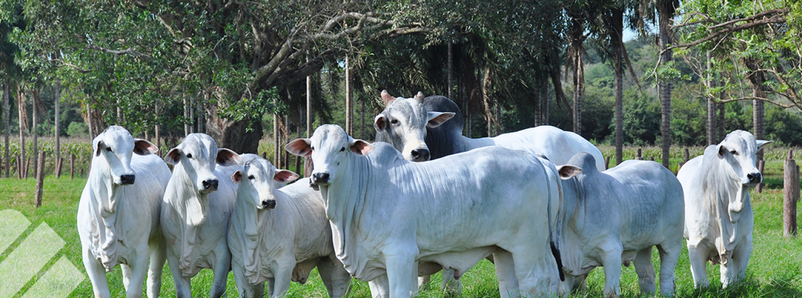
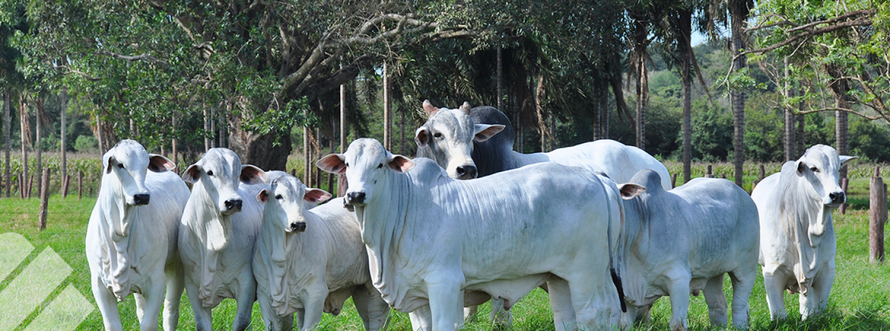

Noticias
El sector de la ganadería es considerado esencial y prioritario en la vacunación contra la COVID-19 en algunos países.
En España, un incendio en una nave ganadera en León provocó la muerte de dos vacas y 16 terneros.
En Bolivia, el Ministerio de Agricultura y Riego aprobó un seguro pecuario para proteger a los animales de los ganaderos.
En Bolivia, el Ministerio de Agricultura y Riego aprobó un seguro pecuario para proteger a los animales de los ganaderos.
En Perú, el consumo de quesos se espera que sea mayor este año que el año pasado, según el director de Ganadería del Minagri
En Venezuela, existe un modelo de negocio que permite a cualquier persona convertirse en ganadero sin la necesidad de adquirir una gran cantidad de tierra.
En México, la ganadería es uno de los sectores más importantes de la economía y representa el 30% del valor bruto de la producción agraria.
En Colombia, la falta de agua ha afectado al 60% del campo, lo que ha obligado a la ganadería extensiva a comprar piensos ante la falta de pasto.
Estas noticias muestran que el sector de la ganadería es muy importante en la economía de muchos países y está en constante evolución. Además, el sector de la ganadería enfrenta desafíos como la falta de agua, los incendios y la pandemia de COVID-19, pero también presenta oportunidades para innovar y mejorar la sostenibilidad.

 
